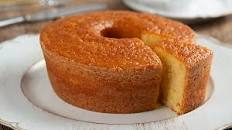

home Receita 1 Receita 2 Receita 3
O bolo de milho é um dos mais tradicionais do país. Ele marca presença não apenas nos cafezinhos e na primeira refeição do dia, mas também é popular nas festas juninas.

1 lata de milho verde 1 lata de açúcar (medida da lata de milho) 4 ovos 2 colheres (sopa) de coco ralado 1 lata de óleo (medida da lata de milho) 1 lata de fubá (medida da lata de milho) 2 colheres (sopa) de farinha de trigo 1 e 1/2 colher (chá) de fermento em pó